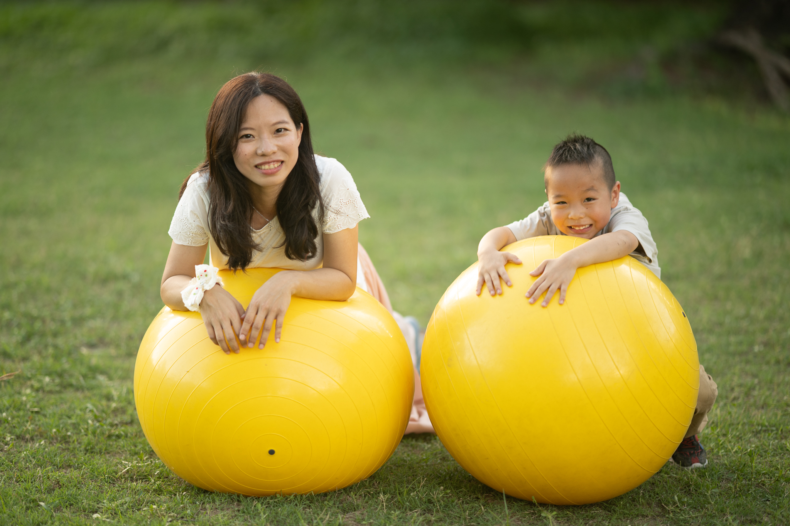

關於我
我是許立懿，是臨床心理師、好眠師、也是三位孩子的媽媽。曾在兒童臨床心理中心擔任心理師，具備嬰幼兒發展評估、親職教養諮詢、以及孕產期/新手父母心理支持的專業知識，也在平時育兒的生活中，持續鍛鍊並累積正向親子互動的技能。期待幫助更多家庭建立健康的睡眠習慣。
臨床心理師（心理字第001477號）

我是許立懿，是臨床心理師、好眠師、也是三位孩子的媽媽。曾在兒童臨床心理中心擔任心理師，具備嬰幼兒發展評估、親職教養諮詢、以及孕產期/新手父母心理支持的專業知識，也在平時育兒的生活中，持續鍛鍊並累積正向親子互動的技能。期待幫助更多家庭建立健康的睡眠習慣。
105年度 『教師研習：談自閉症類疾患』－新北市淡水文化國小
105年度 『親職講座：培養孩子挫折耐受力』－明德長老教會
107年度 『志工培訓：不同障礙類別的溝通技巧』－國立政治大學資源教室
109年度 『兩性講座：兩性婚前交友』－逆風高飛AO社區服務協會
109年度 『親職講座：談青少年叛逆期』－逆風高飛AO社區服務協會
110年度 『志工培訓：認識樂齡長者心理』－逆風高飛AO社區服務協會
110年度 『教師研習：特殊生溝通技巧』－逆轉聯盟協會
110年度 『教師研習：自閉症幼兒遊戲治療』－嘉義縣特教資源中心
111年度 『志工培訓：兒童遊戲發展與技巧』－台南東區親子悠遊館
111年度 『托育人員在職訓練：兒童遊戲發展與活動設計』－嘉義市助產師助產士公會
111年度 『托育人員在職訓練：兒童依附關係』－嘉義市助產師助產士公會
111年度 『教師研習：自閉症學生的正向互動與親師溝通』－嘉義縣大林國小
112年度 『親職講座：返家育兒作戰－家庭生活調適與嬰幼兒作息認識』－嘉基產後護理之家
112年度 『兩性講座：談新婚衝突』－台北靈糧堂
113年度 『親職講座：返家育兒作戰－家庭生活調適與嬰幼兒作息認識』－嘉基產後護理之家
114年度 『親職講座：破解疲累的生活步調』－嘉義市孕產婦心理健康促進活動
許立懿（2015）。自閉症類疾患兒童自閉症狀變化與認知及適應行為關係之縱貫研究。國立政治大學臨床心理學系研究所（未出版博碩士論文），台北市。
姜忠信、*許立懿、李宜融、吳進欽、朱慶琳、侯育銘（2015）。自閉症類群兒童的6年追蹤：以診斷及症狀發展為例。臨床心理學刊，9(2)，7-8。
許立懿（2023年10月）- 在校表現好在家變個人？談小孩的「放學後自制力崩潰」- 親子天下
透過科學睡眠訓練，成功讓寶寶晚上睡眠延長至 6 小時以上。
幫助家長建立穩定的睡眠儀式，顯著改善孩子入睡困難問題。
我很感謝立懿願意輔導我們！因為對小孩睡眠習慣/能力倒退感到焦慮，原本他可以好好在床裡睡覺，突然間很排斥床。諮詢睡眠顧問時也擔心突然要讓小孩練習回到自己在床裡面睡覺，怕會讓他心理受創。但是立懿非常有耐心且願意給我們時間去跟小孩溝通，讓我安心很多！立懿也提供我非常多有用的方法跟小孩溝通，以及教我如何把孩子的睡覺環境安排得更安全。過程中小孩的接受度超過我跟先生預期的。現在孩子已經不會看到嬰兒床就崩潰，也可以在嬰兒床裡安心睡覺，就算醒來或是睡前有點情緒也不會要從床裡爬出來了！真的覺得很感動！
我曾經在寶寶六個月大時，自己嘗試讓他練習自主入睡，那一天成功入睡，但大人回房後大哭到大家都無法睡覺，最後只能抱起來安撫，又開始無止盡的哄睡。 現在寶寶十個月大，從原本的小睡、夜晚長睡眠都需要有大人哄睡、陪睡、無法自行接覺跟夜醒5-6次，經過半個月的練習後，可以自己在嬰兒床自行入睡、無夜醒，我不需要再因為小孩睡在我身旁繃緊神經、或擔心大人不在時摔下床，也不會因為哄不睡小孩而生氣，現在我的寶寶有一個心情美麗的媽媽，非常感謝立懿的幫助！
提供睡眠習慣評估與個別建議，適合剛開始的家長。
包含多階段跟進及客製化方案，確保孩子持續改善睡眠品質。